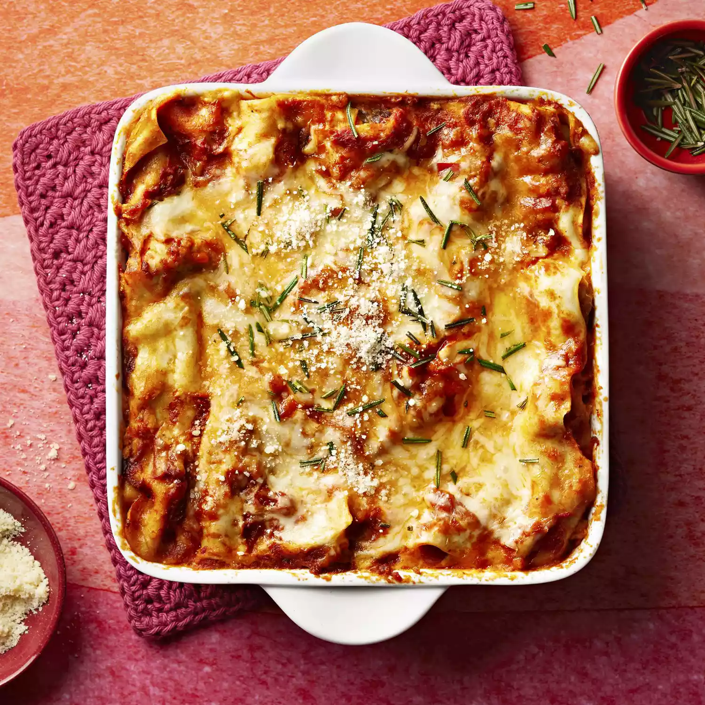

Lasagna Recipe

description
a very good sausage and mushrooms lasagna recipe
Ingredients:
- 1 serving cooking spray
- ½ pound bulk mild Italian sausage
- 3 tablespoons butter
- 3 tablespoons all-purpose flour
- 2 cups low-fat milk
- 1 pinch s
alt
- 1 pinch ground nutmeg
- 1 egg
- 1 (15 ounce) container part-skim ricotta cheese
- 1 tablespoon dried parsley
- 2 (24 ounce) jars marinara sauce, divided
- 1 (9 ounce) package no-boil lasagna noodles, divided
- 1 cup chopped cremini mushrooms, divided
- 1 (16 ounce) package shredded part-skim mozzarella cheese, divided
- ½ cup grated Parmesan cheese, divided
STEPS
- Preheat oven to 375 degrees F (190 degrees C). Spray a 9x13-inch baking dish with cooking spray.
- Place the sausage in a skillet over medium heat and cook until browned and crumbly, about 10 minutes. Drain the sausage and set aside.
Home